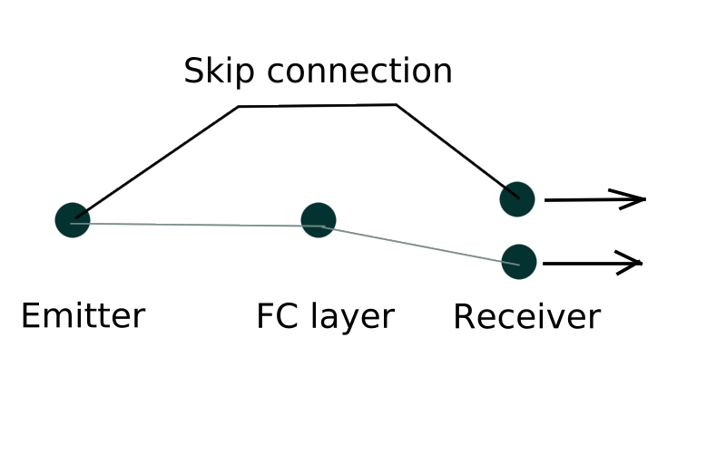
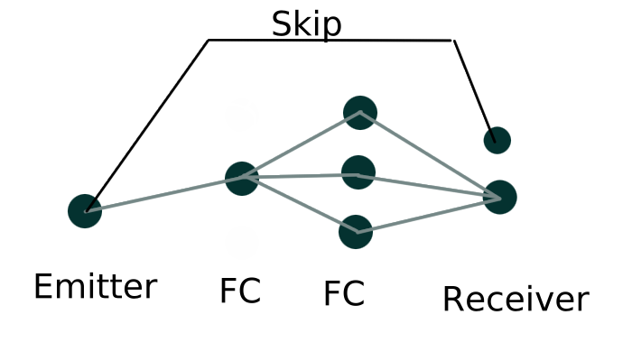
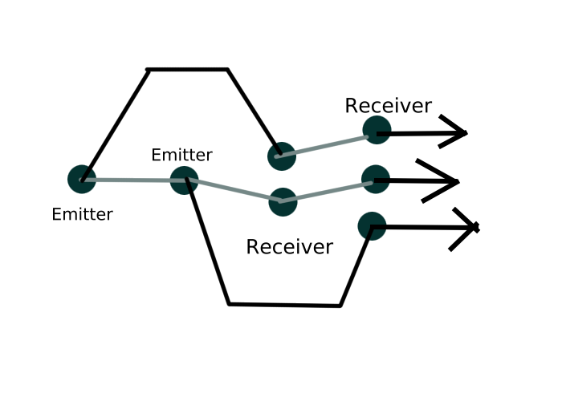

MentisJS
Resnet implementation
ResEmitterLayers with the same ID as ResReceiverLayers will transmit data across layers. The best way to show something
though is by example.
let net = new Net([
new Input(1),
new Emitter(3),
new FC(1, 1),
new Sig(1),
new Receiver(3)
]);

let net = new Net([
new Input(1),
new Emitter("anything can be an identifyer"),
new FC(1,
3),
new Receiver("anything can be an identifyer")
]);

let net = new Net([
new Input(1),
new Emitter('a'),
new Emitter('b'),
new
Receiver('a'),
new Receiver('b')
]);
